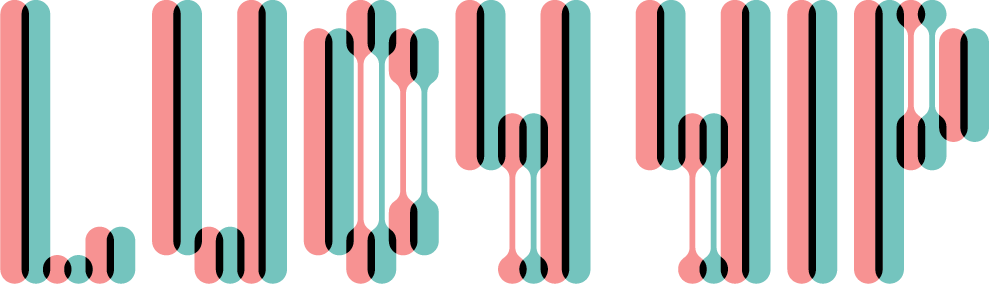

{ oeuvre }
design | tech | material | wildcard
lucy yip is a designer based in cambridge, ma. currently focusing on designing for object-space interactive empathy and data-visualization; traces of her can be found at risd, harvard, autodesk, tomorrow lab, and microsoft research, and most recently, ibm research | mit-ibm watson ai lab.
design | tech | material | wildcard
lucy yip is a designer based in cambridge, ma. currently focusing on designing for object-space interactive empathy and data-visualization; traces of her can be found at risd, harvard, autodesk, tomorrow lab, and microsoft research.
RECENT WORKS
SupremeX Lending (a.k.a. SXC) is a crypto startup intended to provide a decentralized crypto lending market operating on multiple platforms.
#frontend #uiux #crypto #startup
An exercise-encouraging game designed for smart phone user. Player controls an avatar in his/her phone, and help he/she to grow, obtain physical abilities and exchange for useful gadget.
#fitness #uiux #game #avatar
Intends to identify a flawed system in the creative make & build process, aka the user experience issue with smooth-on molding and casting, and create a visual-experience solution for it in the form of a tablet application.
#casting #arts #uiux #assistant
A platform for treatment resistant depression (TRD) patients improving patient feedback and psychiatrist communication.
#mentalhealth #depression #mdd #trd
Online platform that allows people to record their random inspirations and ideas, and "auction" them to others who find the idea meaningful to them.
#platform #uiux #knowledge #sharing
Transforming the restaurant booking experience through expanding your horizon on cultural ingredients all around the world.
#food #egg #centuryegg #asian #reservation
A user experience case-study and redesign project for Wikipedia, focusing on usability and authenticity.
#wikipedia #usability #crowd-sourcing #documentation
Folkus is a goal-setting / good habit setting app that focuses on motivating the user to achieve their goal via illustrative story-telling. Once the user have set a goal, the app matches it with an adventure tailored to the setting of their goal to help them stay on track and on time with their ideal process. Driven by the visual motivation and the user's own curiosity, Folkus helps them to achieve their goal in an interactive and engaging way.
#mobile #game #inclusive #goal #task #motivation
Monuments venerate a person or commemorate an event, relevant to a social group’s collective memory, history. In recent years communities are rethinking who and what they have memorialized, and if in fact the monuments are commemorating intolerance, violence and hate when viewed through a fuller understanding of history. This is a prototype visualization that focuses on visualizing and fostering communications around Boston monuments.
#bully #school #education #connectivity #wearable
An experience sketch for students to discover orientation events and craft a visual system to accommodate different types of events: sports, music, visual arts, social groups, and volunteering events.
#experience #design #mockup #student #events
Loneliness, a social story is a visualization webpage coded using html/css + D3.js that explores loneliness as a communal characteristics shared by the modern day population
#html #css #interface #interaction
An artificial intelligence application that acts as the user’s nutrition guide. The app interacts with the user in a responsive, dialogue format to ask and gather from the user their daily food intake and provide recommendations for healthy food that can be ordered via its partner UberEats.
#ai #app #food #machinelearning
By incorporating cognitive psychology, meditation and neuro-feedback principles, FocusNow helps users enhance their abilities to focus and study/work efficiently. I was part of this project in 2019, as part of my internship with BrainCo.
#education #app #bci #bmi Ffocus
A wearable, immersive experience projected within a custom designed space helmet Tomorrow Lab created and built with global ad agency McCann for the exclusive release event of Darren Aronofsky's new show, One Strange Rock on National Geographic.
#ar #projection #helmet #natgeo
Panacea serves as a harness for walking, and pulls up and strengthens the knee area and hip muscles of elder dogs, which is where the contacting ligament is degenerating over time and causing instability, pain and immobility.
#vet #pet #recovery #wearable
Research on alternative performance interface translating choreographic practitioners’ expressions into a responsive, integrated orthogonal system of interfaces which the audience can engage with without compromising the original performance, promoting the interactivity within spatial arts.
#interaction #dance #sensor #interpretation
A derivative of a desk lamp with the feature of adaptability, floating over the desk allowing the user to adjust it according to different scenarios, designed on the idea of light with multiple purposes which respond to the user’s multiple needs, simultaneously not compromising the quality of the light and guarantees total practicality making it a flexible, functional yet highly personalized product.
#lighting #adaptive #home
Hardware design and UIUX deisgn for augmented reality cosmetic mirror startup Giaran.
#beauty #cosmetic #mirror #ar
Palm is a resilience development system designed to help children establish resilience and positivity through connecting them to each other on a collaborative platform.
#children #cognition #development #resilience
A children's liquid medication dispenser group project focusing on the concept of form ergonomics and transitional object.
#communication #parenting #medicine #child
A special reward for Citi Bike members that volunteer to redistribute bikes across the city, who provide an invaluable service that benefits other users, as well as the environment.
#token #reword #citibike #mobile #rfid
The TILE Tag is a hardware device that can be used for soft good product development. It captures time-logged garment usage data and provide user-permitted feedback to the brand to better improve their branding strategy as well as the wearer's experience.
#tag #mini #iot #wearable #data
Giraffe is a children’s hospital furniture concept design that aims to keep children companied with appealing and fun toys in any hospital / doctor’s waiting room.
#children #hospital #furniture
The Organic Library is a material science research x product design project focusing on educating children / young adults regarding bio-inspired design and sustainable materials through the form of a science kit.
#biodesign #material #research #education
BOW is a bullying recognition system that uses bluetooth connectivity to identify bullying activity happening within a school community through self-reporting, and provides useful data to school officials as well as student to help provide grounds for assisted intervention and self-help while maintaining the their' anonymity.
#bully #school #education #connectivity #wearable
brings people and cities together to implement an integratedtangible system promoting urban mobility, public engagement and sustainabletech, aiming towards a cleaner, more collaborative and decentralized solutiocurrent urban issues.
#music #midi #sound #frequency #touch
A special handle design for a pair of general use scissors, specific to the ergonomic needs of a user with Carpal Tunnel Syndrome.
#medical #ergonomic #industrialdesign
Loomia is a soft circuit system that can be embedded into textiles for heating, lighting, sensing or data-tracking applications. The Loomia Electronic Layer (LEL) integrates seamlessly with a brand's garment, powered by a delicately designed battery.
#smartwearable #battery #electronics #portable
The DoubleBubble bottle tackles the concerns for people not drinking enough water by pairing water bottles and sharing drinking information. When one person is drinking or filling his/her water bottle, both bases react to it by creating a vortex,, a gurgling / pouring sound, and thus creating an audio-visual “drinking” effect. In this fun and thoughtful way, each person is reminded to drink the water he or she needs.
#i/o #mutual #interactive #health #water
Scintilla (noun. a tiny trace or spark of a specified quality or feeling) is
an ambient window installation focusing on momentary perception. We experience many things in a split second through our various sensory inputs, yet very little is encoded into our memory. The ambient installation focuses on temporarily capturing those moments, and prompts the user to reevaluate their perception of the small matters through turning ephemeral reactions into longevity results.
#time #installation #video #ioart
A collection of bedroom applicants mounted on one single circular frame unity, aesthetic and space saving purposes.
#fixture #product #home #combination
Series of mechanism translating to non-linear kinetic movements, mimicking the motions of a pat of flamingos.
#mechanism #toy #sculpture
A work-in-progress piece of wearable art based on the original gummy bear snack. Not gummy-ish, nor edible, this series of fun iteration of bears narrate different stories of this familiar candy we think we know so well.
#food #jewelry #hardcandy #iterations #gummybear
A series of experimentation with CNC, acrylic resin and other non-conventional material exploring the use of color in affecting perception of form.
#speculative #fabrication #cnc
An accident is always an opportunity.
#jewelry #ring #practive #soldering #silver
A set of monkey-themed jewelry design rendered in plated metals, inspired by traditional 12 Chinese zodiac symbols, with 2017 being the year of the monkey, designed in a joyous style, to be associated with the fortunate and celebratory mood of the Chinese New Year.
#ar #projection #helmet #natgeo
A luxurious music box giftware design. This was a CAD practice piece creating during my first year in Rhode Island School of Design's Industrail Design program, using rhino and rendered using its own rendering plugin.
#music #CAD #rendering #luxury
Quick iteration of nurf-gun blaster design concept based on the transformability of a chameleon.
#raptile #chameleon #animalthemedtoy
Project in Metal I, a required course for Industrial Design major students at Rhode Island School of Design, specifically looking at how tectonic-inspired modular conceptual structure can represent or be derived from aspects of the Earth’s tectonic characteristics.
#material #glass #lampworking #poetic
Based off of a pun of the term "purebred", as well as the internet's odd fascination with household pets sticking their faces through pieces of toast. A combination of CNC machining process and 3D printing fabrication was used to mass-produce this design. The pieces were then hand sanded, polished, and painted.
#giftware #fabrication #pun #cute #product
‘I like to take pictures wearing headphones, listening to music,’ Minghui explains, ‘and these symbols sparked my imagination’. He chose a wide aperture to blur the background and isolate the forms while keeping the coils in focus. It was an impression of music, the natural elements combined in perfect harmony.
#souvenir #jewelry #photography
Translating / empathizing with an alternative population through creating a medium that simulates the experience of people with musical anhedonia.
#music #midi #sound #frequency #touch
Inspired by the structure of tangled string, this jewelry design seamlessly incorporates both 18th century Art Nouveau style curves and 20th century minimalist structure into a unified piece of jewelry.
#highjewelry #nouveau #art
A quick 1 week toddler's toy design project done in Nuremberg, targeting children from 2 to 6 through creating a pull-able companion.
#toy #toddler #pushpull
An experimental project on materializing colors through fractal generation through logical and social understandings of them, ith the intention of drawing us closer to our innate understanding of colors.
#colors #fractals #materiality
A computational piece that veers into the abstract and the personal, appropriating and remixing the game mechanics of a small video game made around the 2000s.
#replay #flash #cognitive #game
I love / I hate is a graphics project based on using the same metaphorical visual to express two opposite emotions
#love #hate
A series of food illustrations, drawn from family conversations and memoriesInspired by nostalgia, homesickness, and my undying love for it.
#illustration #asian #food
An artistic visual interface demonstrating the possibilities for this technology via extracting important information from quantity of existing data and applying machine learning to create a normal-range model, compare a separate individual’s model with it to effectively identify anomalies.
#python #R #brain #visualization #fmri
If you could taste ambience like wine, as the title suggests.
#translation #web
A computed speculative burial mask for architects focusing on surface manipulation, discretization and curve processing, revolving around the concept of Cotard Delusion, which is a rare mental illness in which the affected person holds the delusional belief that they are already dead, do not exist, are putrefying, or have had part of their body distorted, destroyed or taken.
#owl #merge #mesh #art
Means to a shadow-based sculpture, a collection of three-dimensional objects, that when projected with lights from particular angles create different variations of colorful visual outputs.
#c# #grasshopper #installation #projection
Experimental architectural design project that aims to integrate echolocation-based interaction within projected virtual reality system, to formulate a sensual-materiality experience, that could potentially open a new field in architecture and interactive structure.
#vr #space #architecture #responsive
An interactive virtual reality playground built using A-Frame (a web three.js framework for building VR experiences), our final project for Introduction to Computation taught by Chris Novello.
#vr #community #representation #abstract
A program showing cephalopod reflex action's force and form using the YURT painting and image-placement program Cavepainting at Brown University.
#3dpainting #demonstration #sculpting #vr
We woke up and for some reason, the media, digital and online disappeared. It simply became non-existent. Is this our future?Where is the knowledge being stored? Where can we have access to the backup of our Collective Imaginary? Where did the bigData go? Idea Forward's 24h competition entry (2nd place)
#data #storage #ark #24hr
A riotous, architectural anecdote to the world’s current shipping container waste and recycling issue, without dismissing these container’s original purpose and meaning, part of Volume Zero’s UNBOX2017 Competition. The project won honorable mention (top 50) award.
#sustainable #architecture #containers
Exploring possibilities of new interlocking form and functions for glass in the architecture, engineering and construction industries that that interacts with light, shadow, and the environment in new and interesting ways, through fabricating and experimenting using current digital fabrication technologies and traditional glass working techniques.
#fabrication #glass #material #autodesk
RISD Industrial Design Year 1 Required Course Design Principles Final Project Fast Food Restaurant System. This project plays with the idea of blending traditional herbal ingredient, sustainability and fast-food operation systems
#interior #sustainability #culture #food
Airports are complex, highly - engineered system, and we hope to employ disruptive / additive / creative glitch to create a better terminal experience through providing comfort and entertainment for the travelers.
#travel #airport #furniture #modular
Speculative interior architectural design targeting issue of overpopulation and rapid urbanization in overpopulated cities.
#interior #modular #speculative
To explore the possibility of achieving different three-dimensional ceramic paneling system and filtration facade design variation in the same controlled setting through solely varying the parameters of robotic extrusion, and the potential practical implications of such exploration.
#ceramic #screen #parametric #robotic
A speculative hybrid form of architecture embodying elegance, masculinity, violence, and vulnerability, focusing on the duality of traditional architecture and computational design, through integrating technology and expression and pushing the limits of structural impression on the greater scale.
#surfaces #computation #dance #form #study
Material exploration focusing on the innate properties of glass, entailing both traditional and non-traditional techniques with hot and cold glass, including blowing, molding, casting, assembly, metallic oxidation, fusing, duplicating, re- forming, manufacture and performing unusual manipulations of molten glass and other materials with translucent properties.
#rondell #glassworking #stains #chemistry #blowing
Project in Metal I, a required course for Industrial Design major students at Rhode Island School of Design, specifically looking at how tectonic-inspired modular conceptual structure can represent or be derived from aspects of the Earth’s tectonic characteristics.
#ar #projection #helmet #natgeo
Project exploring the possibility of reclaiming waste from avocado consumptions into a product that reminds people of the full story of avocado plantation and environmental sustainability.
#recycling #sustainable #bio #design
Woodworking experience from Wood I, a required course for Industrial Design major students at Rhode Island School of Design, specifically focusing on lamination and hand carving.
#woodworking #mask #structure
How to Grow (Almost) Anything [ a.k.a .HGTTA ] is a course to teach experienced bio-enthusiasts and those new to the life sciences alike skills at the cutting edge of bioengineering and synthetic biology based on the Bio Academy, a Synthetic Biology Program directed by George Church, professor of Genetics at Harvard medical school.
Exploring possibilities of new interlocking form and functions for glass in the architecture, engineering and construction industries that that interacts with light, shadow, and the environment in new and interesting ways, through fabricating and experimenting using current digital fabrication technologies and traditional glass working techniques.
#fabrication #glass #material #autodesk
An artificial intelligence application that acts as the user’s nutrition guide. The app interacts with the user in a responsive, dialogue format to ask and gather from the user their daily food intake and provide recommendations for healthy food that can be ordered via its partner UberEats.
#ai #app #food #machinelearning
Material exploration focusing on the innate properties of glass, entailing both traditional and non-traditional techniques with hot and cold glass, including blowing, molding, casting, assembly, metallic oxidation, fusing, duplicating, re- forming, manufacture and performing unusual manipulations of molten glass and other materials with translucent properties.
#rondell #glassworking #stains #chemistry #blowing
The DoubleBubble bottle tackles the concerns for people not drinking enough water by pairing water bottles and sharing drinking information. When one person is drinking or filling his/her water bottle, both bases react to it by creating a vortex,, a gurgling / pouring sound, and thus creating an audio-visual “drinking” effect. In this fun and thoughtful way, each person is reminded to drink the water he or she needs.
#i/o #mutual #interactive #health #water
General graphic design, branding, poster, etc. in 2018/2019 for Harvard student organizations.
#poster #advertisement #festival #chinese #lunar #newyear
To explore the possibility of achieving different three-dimensional ceramic paneling system and filtration facade design variation in the same controlled setting through solely varying the parameters of robotic extrusion, and the potential practical implications of such exploration.
#ceramic #screen #parametric #robotic
Experimental architectural design project that aims to integrate echolocation-based interaction within projected virtual reality system, to formulate a sensual-materiality experience, that could potentially open a new field in architecture and interactive structure.
#vr #space #architecture #responsive
Project in Metal I, a required course for Industrial Design major students at Rhode Island School of Design, specifically looking at how tectonic-inspired modular conceptual structure can represent or be derived from aspects of the Earth’s tectonic characteristics.
#material #glass #lampworking #poetic
A riotous, architectural anecdote to the world’s current shipping container waste and recycling issue, without dismissing these container’s original purpose and meaning, part of Volume Zero’s UNBOX2017 Competition. The project won honorable mention (top 50) award.
#sustainable #architecture #containers
A series of experimentation with CNC, acrylic resin and other non-conventional material exploring the use of color in affecting perception of form.
#speculative #fabrication #cnc
Speculative interior architectural design targeting issue of overpopulation and rapid urbanization in overpopulated cities.
#interior #modular #speculative
Means to a shadow-based sculpture, a collection of three-dimensional objects, that when projected with lights from particular angles create different variations of colorful visual outputs.
#c# #grasshopper #installation #projection
A computed speculative burial mask for architects focusing on surface manipulation, discretization and curve processing, revolving around the concept of Cotard Delusion, which is a rare mental illness in which the affected person holds the delusional belief that they are already dead, do not exist, are putrefying, or have had part of their body distorted, destroyed or taken.
#owl #merge #mesh #art
Translating / empathizing with an alternative population through creating a medium that simulates the experience of people with musical anhedonia.
#music #midi #sound #frequency #touch
A wearable, immersive experience projected within a custom designed space helmet Tomorrow Lab created and built with global ad agency McCann for the exclusive release event of Darren Aronofsky's new show, One Strange Rock on National Geographic.
#ar #projection #helmet #natgeo
A series of food illustrations, drawn from family conversations and memoriesInspired by nostalgia, homesickness, and my undying love for it.
#illustration #asian #food
A collection of bedroom applicants mounted on one single circular frame unity, aesthetic and space saving purposes.
#fixture #product #home #combination
We woke up and for some reason, the media, digital and online disappeared. It simply became non-existent. Is this our future?Where is the knowledge being stored? Where can we have access to the backup of our Collective Imaginary? Where did the bigData go? Idea Forward's 24h competition entry (2nd place)
#data #storage #ark #24hr
A computational piece that veers into the abstract and the personal, appropriating and remixing the game mechanics of a small video game made around the 2000s.
#replay #flash #cognitive #game
An interactive virtual reality playground built using A-Frame (a web three.js framework for building VR experiences), our final project for Introduction to Computation taught by Chris Novello.
#vr #community #representation #abstract
Based off of a pun of the term "purebred", as well as the internet's odd fascination with household pets sticking their faces through pieces of toast. A combination of CNC machining process and 3D printing fabrication was used to mass-produce this design. The pieces were then hand sanded, polished, and painted.
#giftware #fabrication #pun #cute #product
A speculative hybrid form of architecture embodying elegance, masculinity, violence, and vulnerability, focusing on the duality of traditional architecture and computational design, through integrating technology and expression and pushing the limits of structural impression on the greater scale.
#surfaces #computation #dance #form #study
Bio-engineering project from MIT Media Lab course < How to Grow Almsot Anything > on engineering ways to extract yeast to create Yeast bread.
#ar #projection #helmet #natgeo
Woodworking experience from Wood I, a required course for Industrial Design major students at Rhode Island School of Design, specifically focusing on lamination and hand carving.
#woodworking #mask #structure
A program showing cephalopod reflex action's force and form using the YURT painting and image-placement program Cavepainting at Brown University.
#3dpainting #demonstration #sculpting #vr
Online platform that allows people to record their random inspirations and ideas, and "auction" them to others who find the idea meaningful to them.
#platform #uiux #knowledge #sharing
Intends to identify a flawed system in the creative make & build process, aka the user experience issue with smooth-on molding and casting, and create a visual-experience solution for it in the form of a tablet application.
#casting #arts #uiux #assistant
An artistic visual interface demonstrating the possibilities for this technology via extracting important information from quantity of existing data and applying machine learning to create a normal-range model, compare a separate individual’s model with it to effectively identify anomalies.
#python #R #brain #visualization #fmri
‘I like to take pictures wearing headphones, listening to music,’ Minghui explains, ‘and these symbols sparked my imagination’. He chose a wide aperture to blur the background and isolate the forms while keeping the coils in focus. It was an impression of music, the natural elements combined in perfect harmony.
#souvenir #jewelry #photography
A wearable, immersive experience projected within a custom designed space helmet Tomorrow Lab created and built with global ad agency McCann for the exclusive release event of Darren Aronofsky's new show, One Strange Rock on National Geographic.
#communication #parenting #medicine #child
An experimental project on materializing colors through fractal generation through logical and social understandings of them, ith the intention of drawing us closer to our innate understanding of colors.
#colors #fractals #materiality
A special handle design for a pair of general use scissors, specific to the ergonomic needs of a user with Carpal Tunnel Syndrome.
#medical #ergonomic #industrialdesign
Panacea serves as a harness for walking, and pulls up and strengthens the knee area and hip muscles of elder dogs, which is where the contacting ligament is degenerating over time and causing instability, pain and immobility.
#vet #pet #recovery #wearable
Project in Metal I, a required course for Industrial Design major students at Rhode Island School of Design, specifically looking at how tectonic-inspired modular conceptual structure can represent or be derived from aspects of the Earth’s tectonic characteristics.
#ar #projection #helmet #natgeo
Inspired by the structure of tangled string, this jewelry design seamlessly incorporates both 18th century Art Nouveau style curves and 20th century minimalist structure into a unified piece of jewelry.
#highjewelry #nouveau #art
An exercise-encouraging game designed for smart phone user. Player controls an avatar in his/her phone, and help he/she to grow, obtain physical abilities and exchange for useful gadget.
#fitness #uiux #game #avatar
A set of monkey-themed jewelry design rendered in plated metals, inspired by traditional 12 Chinese zodiac symbols, with 2017 being the year of the monkey, designed in a joyous style, to be associated with the fortunate and celebratory mood of the Chinese New Year.
#ar #projection #helmet #natgeo
A derivative of a desk lamp with the feature of adaptability, floating over the desk allowing the user to adjust it according to different scenarios, designed on the idea of light with multiple purposes which respond to the user’s multiple needs, simultaneously not compromising the quality of the light and guarantees total practicality making it a flexible, functional yet highly personalized product.
#lighting #adaptive #home
A luxurious music box giftware design. This was a CAD practice piece creating during my first year in Rhode Island School of Design's Industrail Design program, using rhino and rendered using its own rendering plugin.
#music #CAD #rendering #luxury
Research on alternative performance interface translating choreographic practitioners’ expressions into a responsive, integrated orthogonal system of interfaces which the audience can engage with without compromising the original performance, promoting the interactivity within spatial arts.
#interaction #dance #sensor #interpretation
A special reward for Citi Bike members that volunteer to redistribute bikes across the city, who provide an invaluable service that benefits other users, as well as the environment.
#token #reword #citibike #mobile #rfid
Series of mechanism translating to non-linear kinetic movements, mimicking the motions of a pat of flamingos.
#mechanism #toy #sculpture
A work-in-progress piece of work based on the original gummy bear snack. Not gummy-ish, nor edible, this series of fun iteration of bears narrate different stories of this familiar candy we think we know so well.
#food #jewelry #hardcandy #iterations #gummybear
Project exploring the possibility of reclaiming waste from avocado consumptions into a product that reminds people of the full story of avocado plantation and environmental sustainability.
#recycling #sustainable #bio #design
Bio-engineering project from MIT Media Lab course < How to Grow Almsot Anything > on engineering ways to extract yeast to create Yeast bread.
#ar #projection #helmet #natgeo